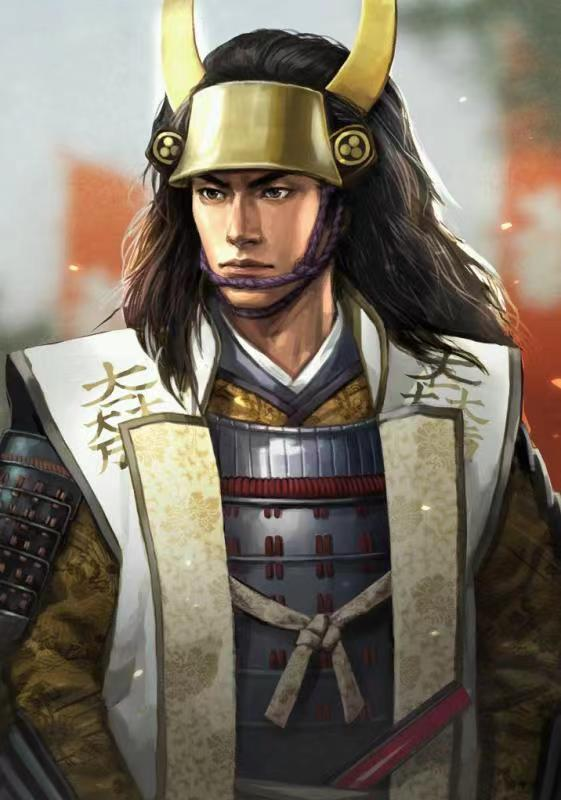
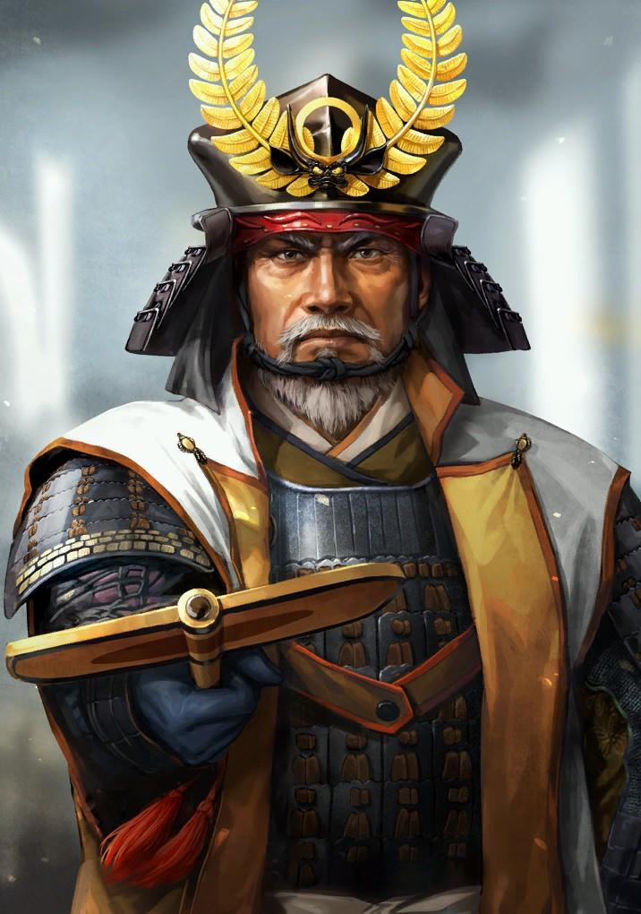

The Battle of Sekigahara in data.
The unprecedented battle that divided the world in 1600 ended after only half a day. It was incomprehensible. This time let us explain the reason for this in the form of data.
An overview of the Battle of Sekigahara
This great war, which took place in 1600, divided the whole of Japan into two factions.
Comparison of the Eastern and Western sides
Let us first look at the comparison of the numbers of troops on both sides.
The Army of the West was torn internally even before the start of the war.
Hidetaki Kobayakawa with over 20,000 men turned against Ishida.
The Mouri family was even less involved in the battle.
Let's make an assumption that The Western Army did not split.
Would it have been possible to defeat the Eastern army?
The answer may also be no.
Even before the war started, the Eastern Army had 20,000 more men!
The gap in troop strength had actually ballooned by a factor of four.
Here is a comparison of forces after the war started.
It's already impossible!
The Sekigahara Combined War Figure Screen
So did the Westerners have the ability to win through protracted warfare?
Analyzing the battlefield
War performance of each daimyo
Who has contributed the most to this battle?
Ukita naoies are the main force in the Western Army
On the other side, Masanori Fukushima, the vanguard, was the MVP of the Eastern Army.
In the bubble chart above you can visually see who the top contributors are.
The larger the circle, the greater the contribution, and vice versa.
The post-war situation
Who got the biggest pay rise after the battle?
Ieyasu Tokugawa, no doubt
Who lost the most after the battle?
TBC
Conclusion
Ishida Mitsunari
Ishida Mitsunari's defeat was not only due to internal divisions and betrayals within the Western Army but also to the gap in resources between him and Tokugawa Ieyasu.


Tokugawa Ieyasu
He fought with all his might against the powerful Tokugawa Ieyasu for the survival of the Toyotomi regime and was killed at the last moment.
This visualisation is created by Kaiyong Chen. The datasource is some data repository online.